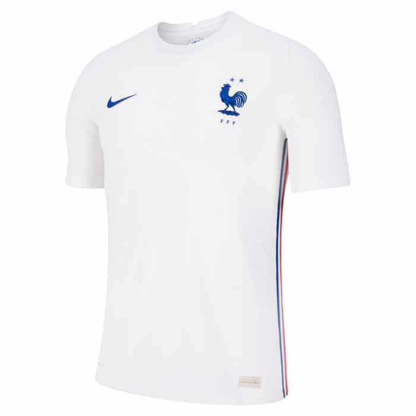
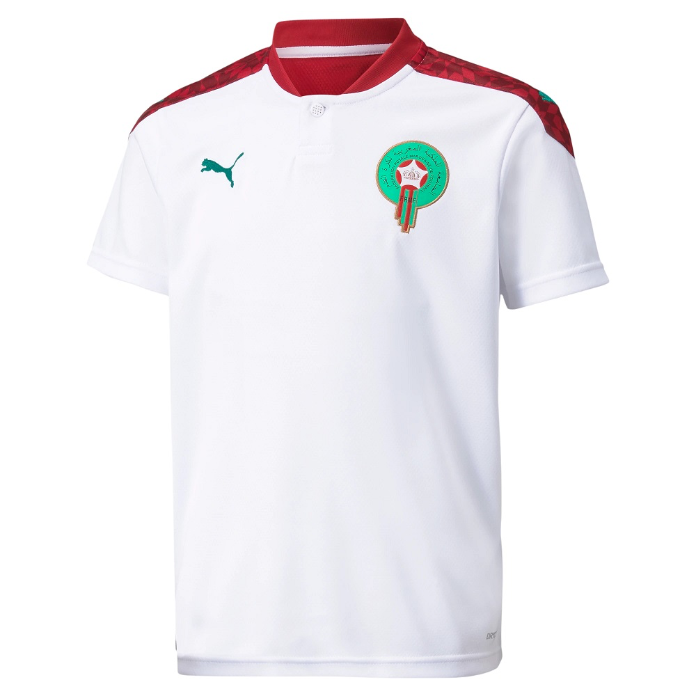
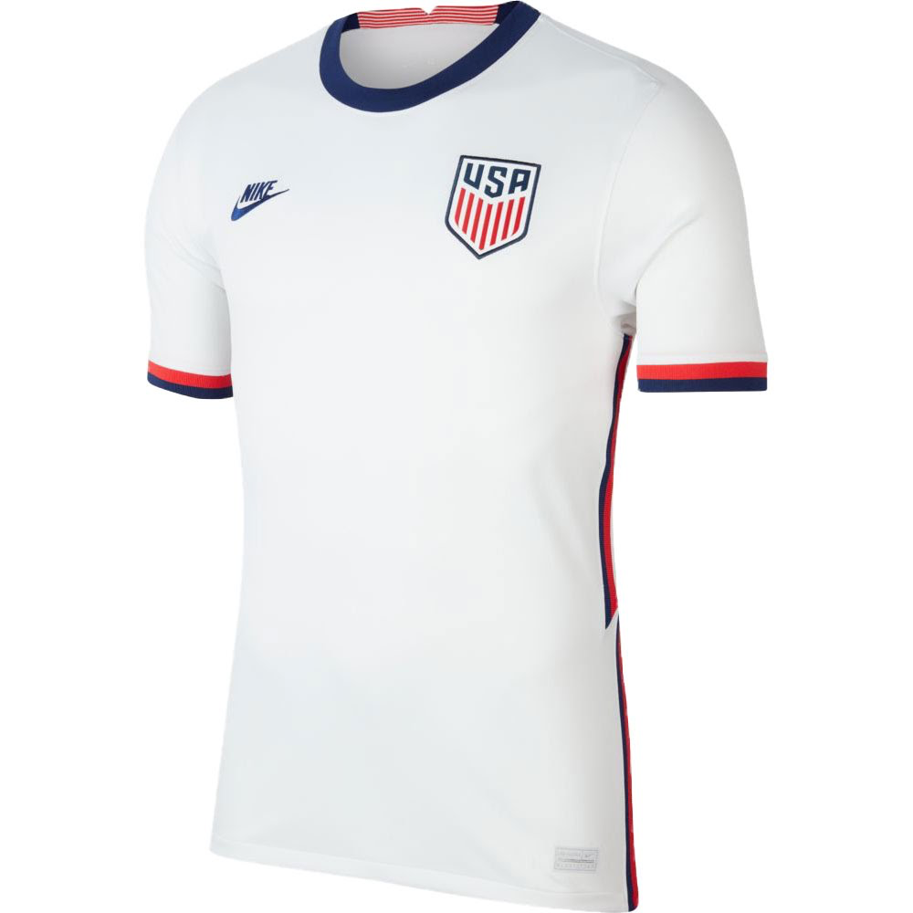
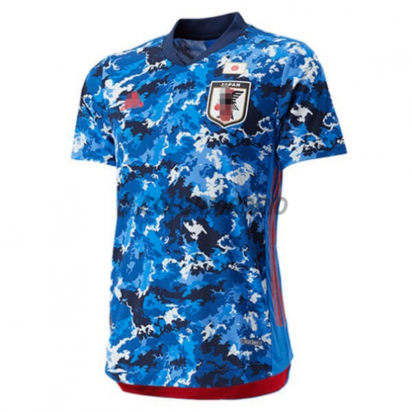
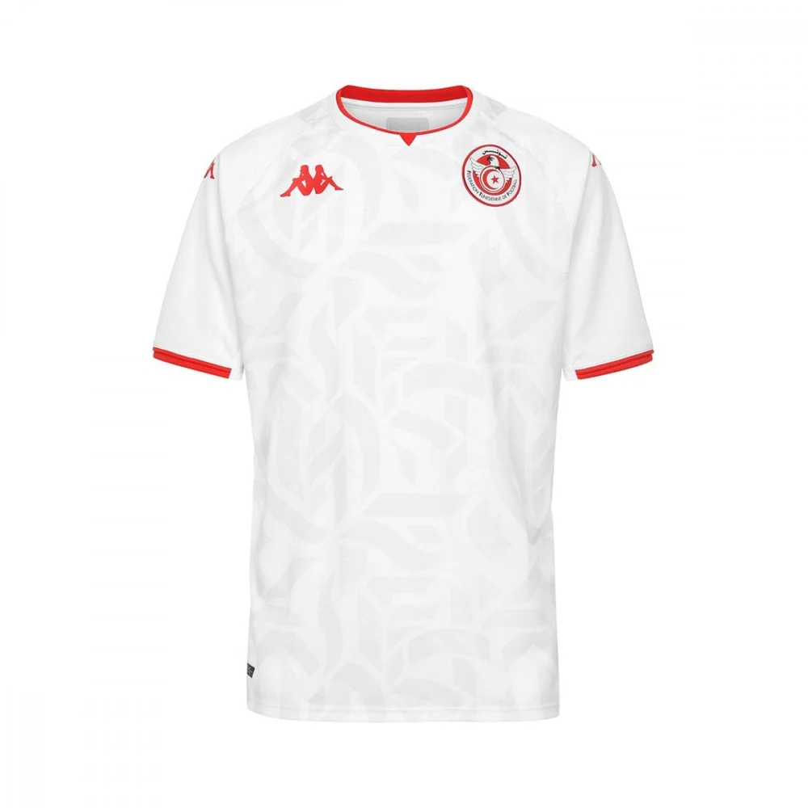
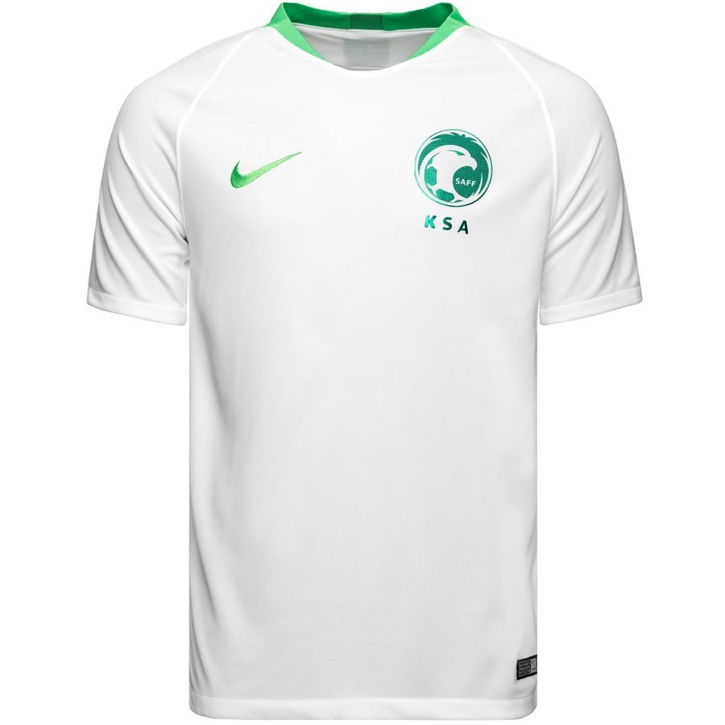
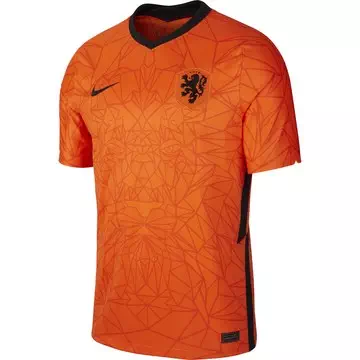
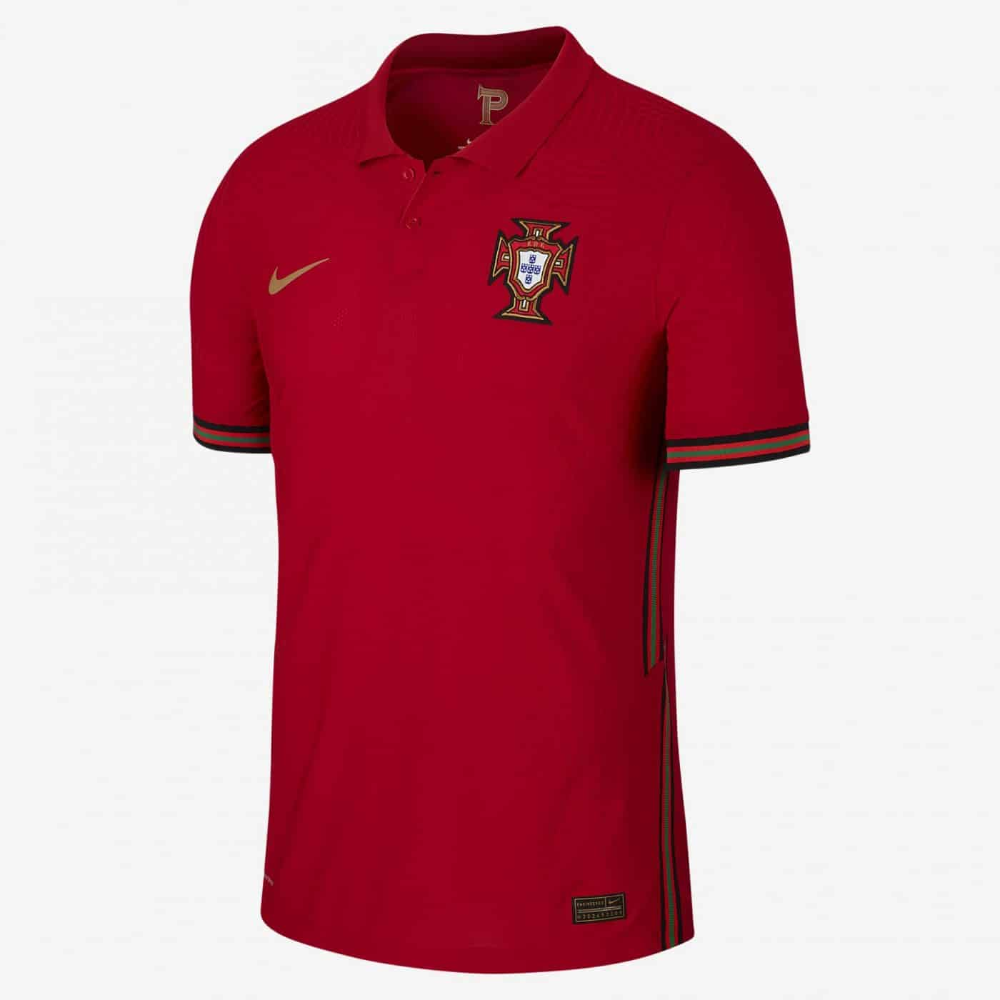
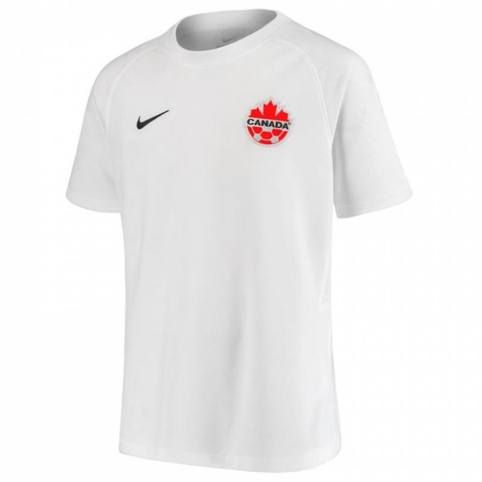

L'équipe d'Allemagne compte l'un des plus grand palmarès du football mondial,
quatre remportées (1954, 1974, 1990 et 2014).

L'équipe de France de football, créée en 1904, est l'équipe nationale qui représente la France dans les compétitions internationales masculines de football, sous l'égide de la Fédération française de football
.

L'équipe du Maroc de football, surnommée « les Lions de l'Atlas », représente le Maroc dans les compétitions internationales masculines de football.

L'équipe des États-Unis de soccer représente les États-Unis lors des compétitions de soccer. Elle est sous l'égide de la Fédération des États-Unis de soccer.

L'équipe du Japon de football est la sélection de joueurs de football japonais représentant le pays lors des compétitions régionales, continentales et internationales sous l'égide de la Fédération du Japon de football.
L'équipe du Sénégal de football, créée en 1961, est constituée par une sélection des meilleurs joueurs sénégalais, sous l'égide de la Fédération sénégalaise de football.

L'équipe de Tunisie de football est l'équipe nationale qui représente la Tunisie dans le football international masculin. Membre depuis 1960 de la FIFA au niveau international.

L'équipe d'Arabie saoudite de football est la sélection de joueurs de football saoudiens représentant le pays lors des compétitions internationales sous l'égide de la fédération d'Arabie saoudite de football.

L'équipe des Pays-Bas de football est constituée d'une sélection des meilleurs joueurs néerlandais sous l'égide de la Fédération royale néerlandaise de football.
L'équipe de Croatie de football, créée en 1991, est l'équipe nationale représentant la Croatie en football masculin. Cette équipe est dirigée par la Fédération croate de football

L'équipe du Portugal de football est la sélection de joueurs portugais représentant le pays lors des compétitions internationales de football masculin, sous l'égide de la Fédération portugaise de football.

L'équipe du Canada de soccer2 est la sélection de football représentant l'Association canadienne de soccer. Après une première participation à la Coupe du monde en 1986, l'équipe du Canada parvient à se qualifier pour l'édition 2022 au Qatar.